The Inn Way to the Yorkshire Dales
Day 2 : Buckden to Askrigg
Home **
Previous Day **
Next Day
Leaving Buckden, while climbing steeply up the side of Buckden Pike, we had beautiful views up Wharfedale toward Hubberholme.
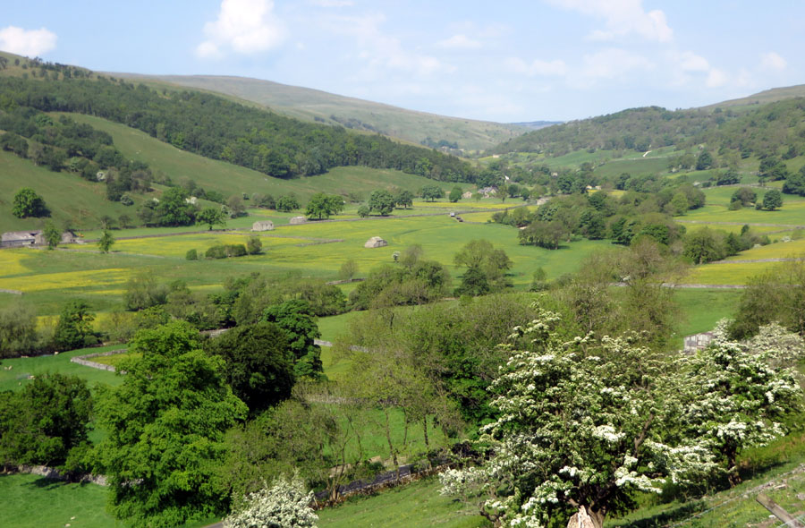
The route leveled off, and we had pleasant grassy walking. Later
we turned up a track toward Stake Moss. This track follows the
route of a Roman road, up and across the moor. It was four miles or so
of wild moorland, totally desolate except for sheep.
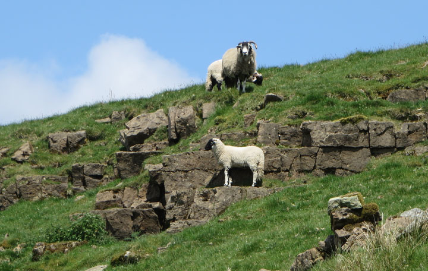
We were on the track for several miles.
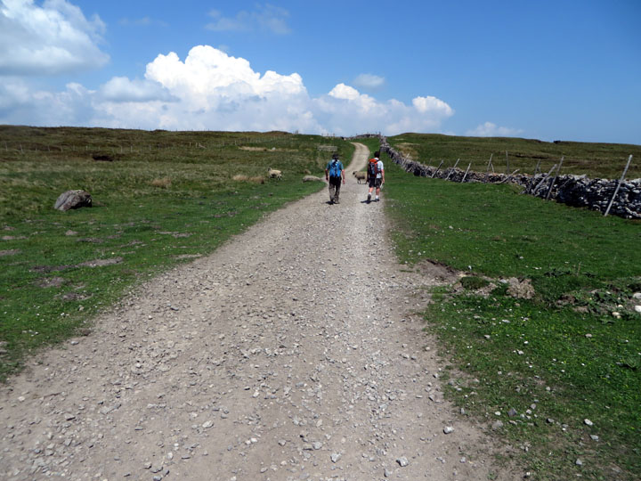
And then we
turned off across the uplands.
What glorious panoramas!
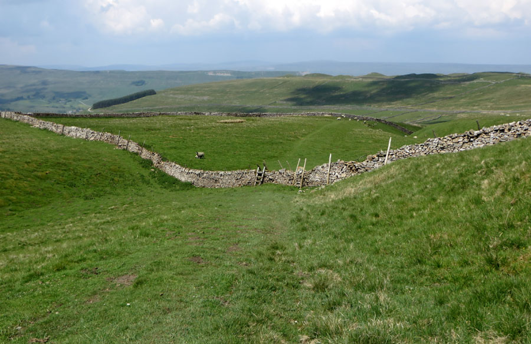
There were
many ladder stiles,
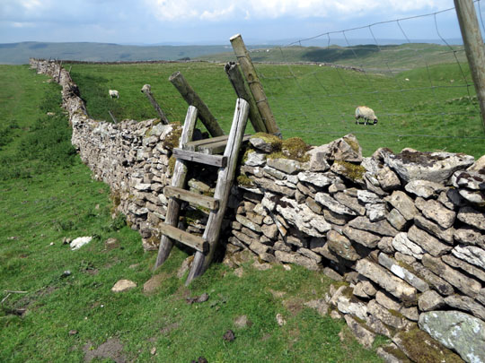
as well as stone step stiles.
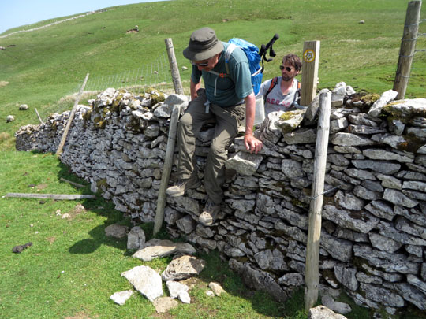
After several enjoyable miles we dropped down
into the hamlet of Stalling Busk, in Raydale.
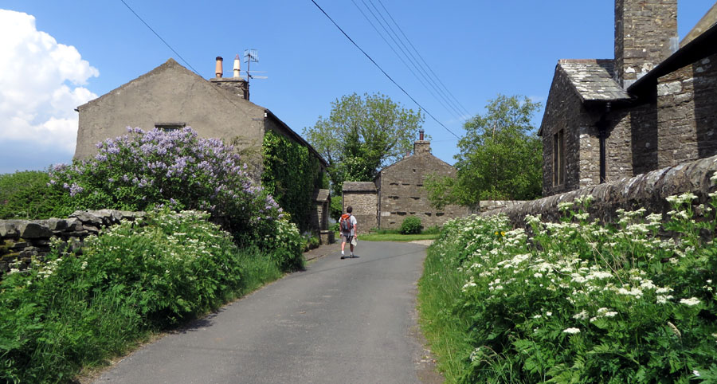
Soon after we left Stalling Busk, we saw Semerwater.
This is a small lake, the result of the retreating glacier in
Wensleydale. The moraine left by the glacier blocked the water,
forming the lake.
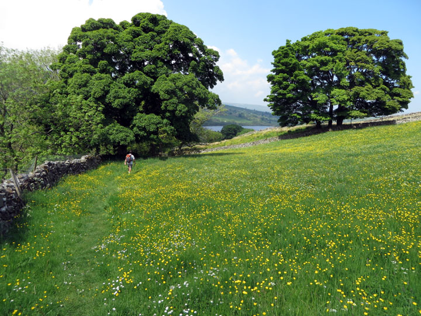
On down through the buttercups
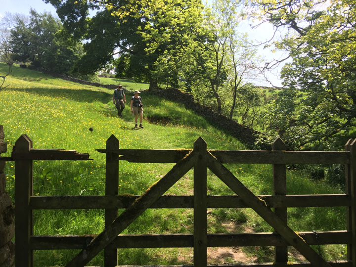
and past the ruins of a church.
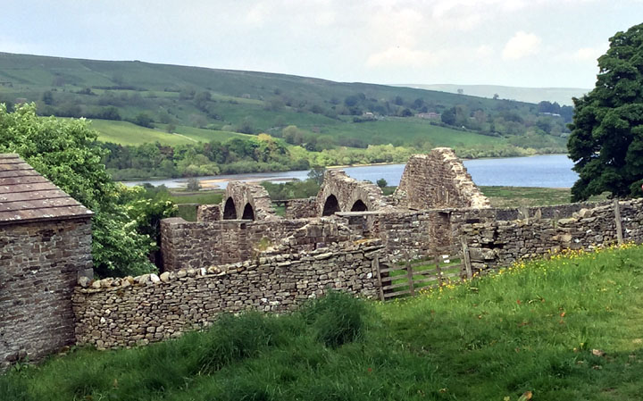
We followed the path around the side of Semerwater. Here at the far end there was a
pleasingly bucolic scene with
geese and cows.
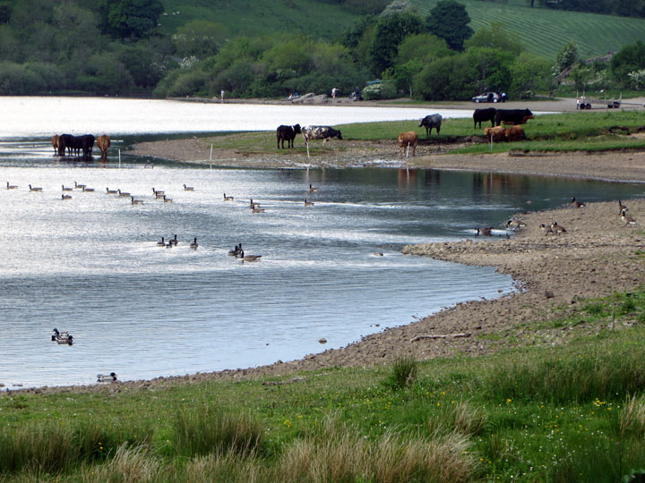
The route then followed beside the River Bain to Bainbridge. Two miles
long, this is the shortest river in Britain. It slices through the moraine
left by the glacier.
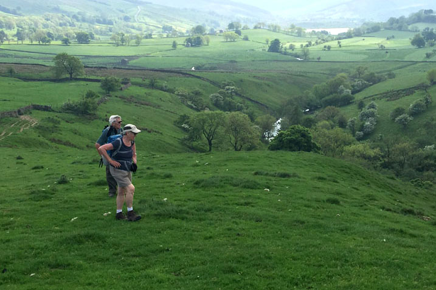
Soon we were heading down to the town of
Bainbridge.
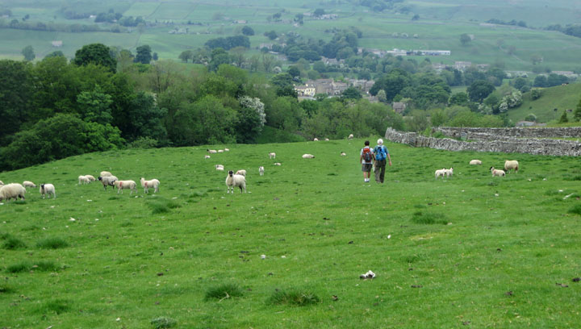
We stopped for a pint at the Rose and Crown
(dated 1445, dirty boots welcome) before setting off on the last few
miles to Askrigg.
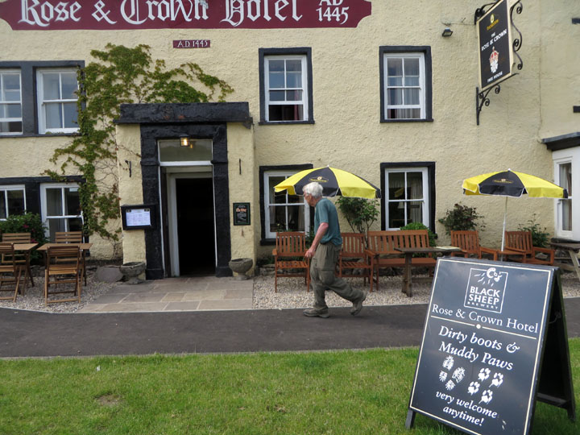
Askrigg was only a few miles away, but the
suggested route was a longer, circuitous one. We passed by Nappa
Hall, a fortified manor house built in the mid 1400s.
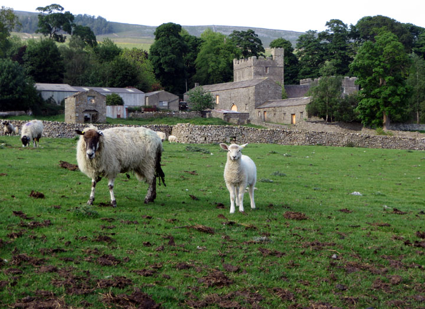
Then after going down a steep bank and
crossing a river,
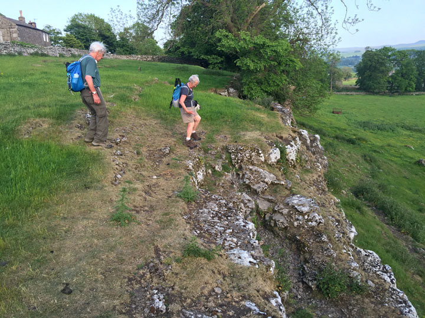
we crossed several more amazing fields of
buttercups, before finally arriving at Askrigg for the night.
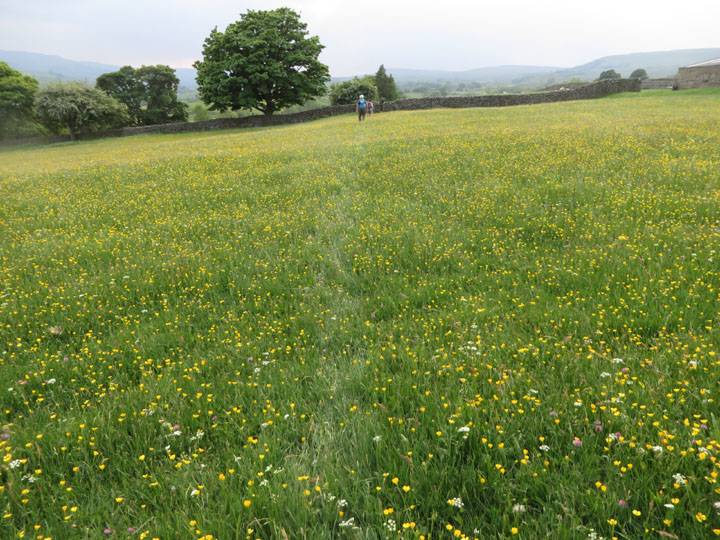
Home **
Previous Day **
Next Day